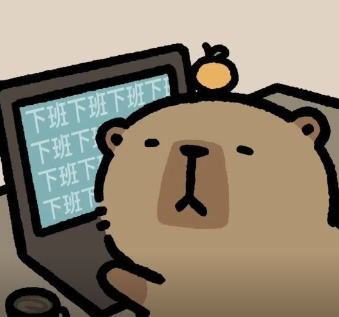
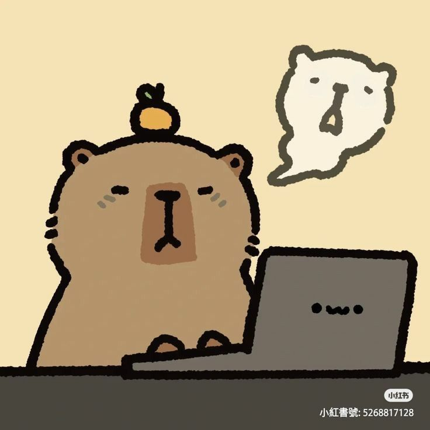
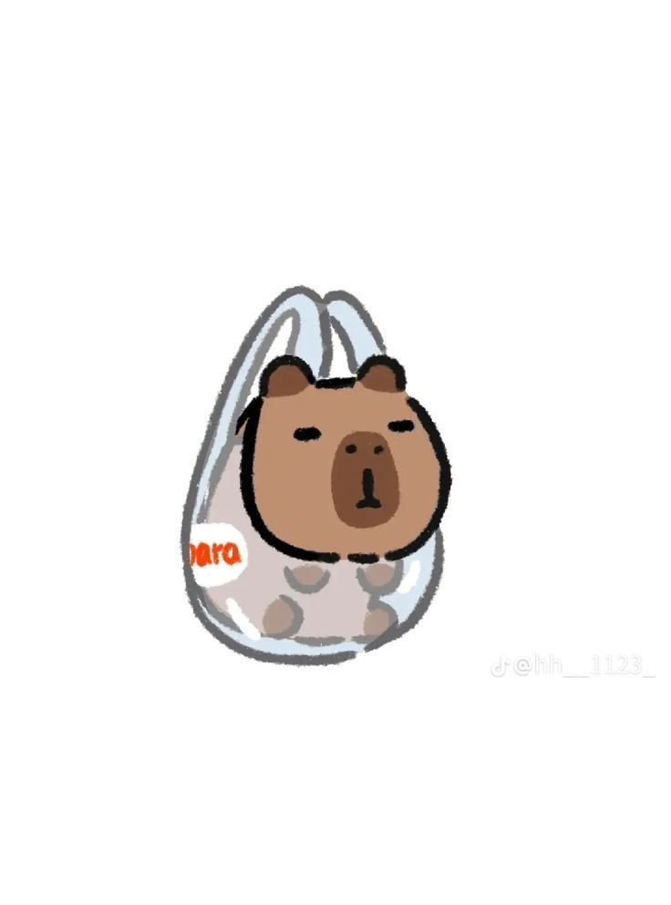
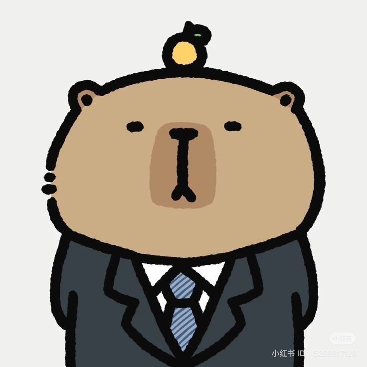
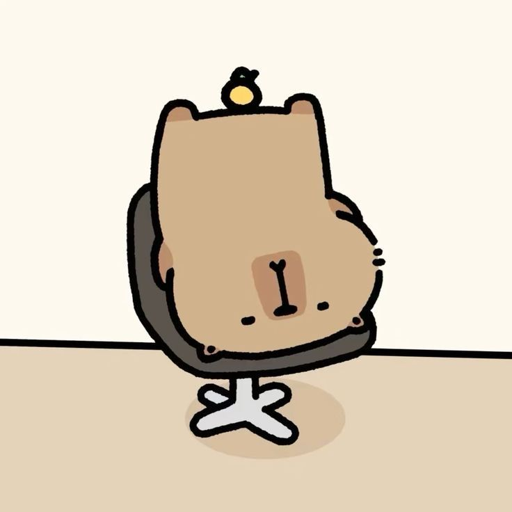

Preguntas Frecuentes

✦¿Qué es Hackathon MTY?
Hackathon MTY es un evento donde estudiantes curiosos con ganas de crear se reúnen para crear proyectos increíbles! Durante el hackathon podrán construir hardware real con sus ideas. No importa si eres principiante o avanzado: lo importante es experimentar, aprender y crear algo que haga que la gente diga "¿cómo hicieron eso?"

✦¿Quién puede asistir?
Cualquier estudiante (menor de 18 años) con ganas de aprender, construir y conocer personas increíbles puede asistir No necesitas ser experto programando ni tener experiencia previa en hackathons. Si te gusta la tecnología, el diseño, la robótica, la inteligencia artificial o simplemente tienes ideas locas que quieres hacer realidad, este lugar es para ti.

✦¿Por qué deberían los estudiantes asistir?
Hackathon MTY es una oportunidad única para que los estudiantes exploren su creatividad, desarrollen habilidades técnicas y colaboren con otros entusiastas de la tecnología. Es un espacio donde puedes probar ideas, aprender de expertos y construir proyectos que realmente marquen la diferencia.
 ✦
✦
¿Cuáles son los costos?
NO HAY COSTO! es completamente gratis! en este momento estamos buscando patrocinadores, nuestra meta es que los chicos no pierdan la oportunidad de aprender por el costo.

✦¿Cómo puedo empezar?
No hace falta que tengas experiencia previa para unirte a Hackathon MTY. Solo necesitas tener ganas de aprender y crear.

✦¿Cómo puedo formar parte de el equipo?
Si te interesa ser parte del equipo organizador, mentor o patrocinador, ¡nos encantaría saber de ti! Puedes contactarnos a través de nuestras redes sociales o enviar un correo (estan en el sitio web ) ✦ ✦ ✦ ✦ ✦